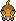

枯葉草地Vermilion Meadow
- 地區
- 關都
- 種類
- 道路與野外
- 天氣
- 晴朗 42%・陰天 18%・下雨 12%・打雷 4%・大晴天 24%
野生寶可夢
白天
| 寶可夢 | 等級 | 機率 |
|---|---|---|
 嘟嘟 嘟嘟 | 16-22 | 9.92% |
 霹靂電球 霹靂電球 | 16-21 | 9.92% |
 小拉達 小拉達 | 16-19 | 9.92% |
 阿柏蛇 阿柏蛇 | 16-21 | 9.92% |
 烈雀 烈雀 | 16-19 | 9.92% |
 小火馬 小火馬 | 17-22 | 8.26% |
 小磁怪 小磁怪 | 16-21 | 8.26% |
 波波 波波 | 16-17 | 8.26% |
 皮卡丘 皮卡丘 | 16-20 | 6.61% |
 拉達 | 20-22 | 4.96% |
 比比鳥 比比鳥 | 18-22 | 4.96% |
 肯泰羅 肯泰羅 | 19-22 | 2.48% 稀有 |
 大蔥鴨 大蔥鴨 | 18-22 | 2.48% 稀有 |
 電擊怪 電擊怪 | 16-20 | 2.48% 稀有 |
 伊布 伊布 | 17-20 | 1.65% 稀有 |
夜晚
| 寶可夢 | 等級 | 機率 |
|---|---|---|
| 霹靂電球 | 16-21 | 12.6% |
| 小拉達 | 16-19 | 12.6% |
| 阿柏蛇 | 16-21 | 12.6% |
 走路草 走路草 | 16-20 | 12.6% |
| 小磁怪 | 16-21 | 10.5% |
 喵喵 喵喵 | 16-22 | 10.5% |
| 皮卡丘 | 16-20 | 8.42% |
 卡蒂狗 卡蒂狗 | 18-22 | 8.42% |
| 拉達 | 20-22 | 6.32% |
| 電擊怪 | 16-20 | 3.16% 稀有 |
| 伊布 | 17-20 | 2.11% 稀有 |
百分比是該地圖、該時段每次生成野生寶可夢時抽到這一隻的機率。天氣若符合寶可夢的屬性，出現率會提高。
這裡的建築與地點
道館
馬志士 （橘色徽章）・ 電 ・枯葉道館・王牌 Lv 37